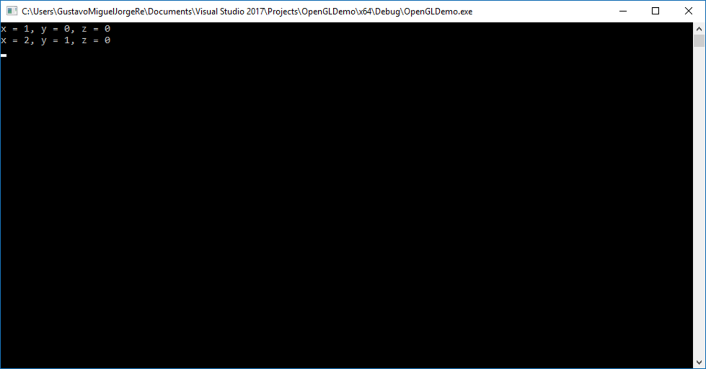

OpenGL Transformations In Practice
Computer Graphics - Transformations In Practice
Gustavo Reis
Transformations In Practice
From Theory to Practice
Now that we’ve explained all the theory behind transformations, it’s time to see how we can actually use this knowledge to our advantage.
OpenGL does not have any form of matrix or vector knowledge built in, so we have to define our own mathematics classes and functions.
The Solution: Math Libraries
We will abstract from all the tiny mathematical details and simply use pre-made mathematics libraries.
There is an easy-to-use and tailored-for-OpenGL mathematics library called GLM.

GLM
What is GLM?
GLM stands for OpenGL Mathematics and is a header-only library, which means that we only have to include the proper header files and we’re done; no linking and compiling necessary.
GLM can be downloaded from their website (version 0.9.9.9 or later).
Copy the root directory of the header files into your includes folder of your C++ project.
Including GLM Headers
Most of GLM’s functionality that we need can be found in only 3 header files that we’ll include as follows:
GLM Basic Example
glm::vec4 vec(1.0f, 0.0f, 0.0f, 1.0f);
glm::mat4 trans(1.0f); // initialize trans with the identity matrix
trans = glm::translate(trans, glm::vec3(1.0f, 1.0f, 0.0f));
std::cout << "x = " << vec.x << ", y = " << vec.y
<< ", z = " << vec.z << std::endl;
vec = trans * vec; // perform translation
std::cout << "x = " << vec.x << ", y = " << vec.y
<< ", z = " << vec.z << std::endl;
Understanding the Example (1/2)
glm::vec4 vec(1.0f, 0.0f, 0.0f, 1.0f);
glm::mat4 trans(1.0f); // initialize trans with the identity matrix
trans = glm::translate(trans, glm::vec3(1.0f, 1.0f, 0.0f));
std::cout << "x = " << vec.x << ", y = " << vec.y
<< ", z = " << vec.z << std::endl;
vec = trans * vec; // perform translation
std::cout << "x = " << vec.x << ", y = " << vec.y
<< ", z = " << vec.z << std::endl;- First define a vector named
vecusing GLM’s built-in vector class - Next define a
mat4which is a 4-by-4 identity matrix - Create a transformation matrix by passing our identity matrix to
glm::translatefunction, together with a translation vector - The given matrix is multiplied with a translation matrix and the resulting matrix is returned
Understanding the Example (2/2)
glm::vec4 vec(1.0f, 0.0f, 0.0f, 1.0f);
glm::mat4 trans(1.0f); // initialize trans with the identity matrix
trans = glm::translate(trans, glm::vec3(1.0f, 1.0f, 0.0f));
std::cout << "x = " << vec.x << ", y = " << vec.y
<< ", z = " << vec.z << std::endl;
vec = trans * vec; // perform translation
std::cout << "x = " << vec.x << ", y = " << vec.y
<< ", z = " << vec.z << std::endl;Then we multiply our vector by the transformation matrix and output the result.
If we remember how matrix translation works, the resulting vector should be (1+1, 0+1, 0+0) which is (2, 1, 0).

Rotate our Textured Rectangle
Scaling and Rotating
Let’s do something more interesting and scale and rotate the container object from the previous class:
glm::mat4 trans(1.0f);
trans = glm::rotate(trans, glm::radians(90.0f), glm::vec3(0.0, 0.0, 1.0));
trans = glm::scale(trans, glm::vec3(0.5, 0.5, 0.5));- First we scale the container by 0.5 on each axis
- Then rotate the container 90 degrees around the Z-axis
- GLM expects angles in radians so we convert using
glm::radians - The textured rectangle is on the XY plane so we rotate around Z-axis
Sending Matrix to Shaders
glm::mat4 trans(1.0f);
trans = glm::rotate(trans, glm::radians(90.0f), glm::vec3(0.0, 0.0, 1.0));
trans = glm::scale(trans, glm::vec3(0.5, 0.5, 0.5));The next big question is: How do we get the transformation matrix to the shaders?
GLSL also has a mat4 type.
We need to adapt our vertex shader to accept a mat4 uniform variable and multiply the position vector by the matrix uniform.
Updated Vertex Shader
Passing Matrix to Shader
Understanding glUniformMatrix4fv
unsigned int transformLoc = glGetUniformLocation(shaderProgram, "transform");
glUniformMatrix4fv(transformLoc, 1, GL_FALSE, glm::value_ptr(trans));- First query the location of the uniform variable
- Send matrix data via
glUniformfunction withMatrix4fvpostfix - First argument: Uniform’s location (should be familiar)
- Second argument: How many matrices we’d like to send (1)
- Third argument: Do we want to transpose our matrix? (swap columns and rows)
Matrix Layout: Column-Major
OpenGL developers often use an internal matrix layout called column-major ordering which is the default matrix layout in GLM.
There is no need to transpose the matrices; we can keep it at GL_FALSE.
The last parameter is the actual matrix data, but GLM stores their matrices not in the exact way that OpenGL likes to receive them.
We first transform them with GLM’s built-in function value_ptr.
Result: Rotated Rectangle

Rotate with Time
Making It Dynamic
Our container is indeed tilted to the left and twice as small so the transformation was successful.
Let’s get a little more funky and see if we can rotate the container over time.
For fun we’ll also reposition the container at the bottom-right side of the window.
To rotate the container over time we have to update the transformation matrix in the game loop because it needs to update each render iteration.
Time-Based Rotation Code
int now = SDL_GetTicks();
float time = (now - start) / 1000.0f;
glm::mat4 trans(1.0f);
trans = glm::translate(trans, glm::vec3(0.5f, -0.5f, 0.0f));
trans = glm::rotate(trans, time, glm::vec3(0.0f, 0.0f, 1.0f));Here we first rotate the container around the origin (0,0,0).
Once it’s rotated, we translate its rotated version to the bottom-right corner of the screen.
Understanding Transformation Order
trans = glm::translate(trans, glm::vec3(0.5f, -0.5f, 0.0f));
trans = glm::rotate(trans, time, glm::vec3(0.0f, 0.0f, 1.0f));Read Transformations in Reverse!
Remember that the actual transformation order should be read in reverse:
- Even though in code we first translate and then later rotate
- The actual transformations first apply a rotation and then a translation
Understanding all these combinations of transformations and how they apply to objects is difficult to understand at first.
Complete SDL3 Example
Full Application Setup
#include <iostream>
#include <SDL3/SDL.h>
#include <glad/glad.h>
#include <glm/glm.hpp>
#include <glm/gtc/matrix_transform.hpp>
#include <glm/gtc/type_ptr.hpp>
class TransformationApp {
private:
SDL_Window* window = nullptr;
SDL_GLContext context = nullptr;
GLuint shaderProgram = 0;
GLuint VAO = 0, VBO = 0, EBO = 0;
GLuint texture1 = 0, texture2 = 0;
Uint64 startTime = 0;Vertex Shader with Transform
const char* vertexShaderSource = R"glsl(
#version 330 core
layout (location = 0) in vec3 position;
layout (location = 1) in vec3 color;
layout (location = 2) in vec2 texCoord;
out vec3 Color;
out vec2 TexCoord;
uniform mat4 transform;
void main() {
gl_Position = transform * vec4(position, 1.0);
Color = color;
TexCoord = texCoord;
}
)glsl";Fragment Shader (Same as Before)
const char* fragmentShaderSource = R"glsl(
#version 330 core
in vec3 Color;
in vec2 TexCoord;
out vec4 outColor;
uniform sampler2D ourTexture;
uniform sampler2D ourTexture2;
void main() {
vec4 colTex1 = texture(ourTexture, TexCoord);
vec4 colTex2 = texture(ourTexture2, TexCoord);
outColor = mix(colTex1, colTex2, 0.5);
}
)glsl";Render Function with Transformation
void render() {
glClearColor(0.2f, 0.3f, 0.3f, 1.0f);
glClear(GL_COLOR_BUFFER_BIT);
// Calculate time-based rotation
Uint64 now = SDL_GetTicks();
float time = (now - startTime) / 1000.0f;
// Create transformation matrix
glm::mat4 trans(1.0f);
trans = glm::translate(trans, glm::vec3(0.5f, -0.5f, 0.0f));
trans = glm::rotate(trans, time, glm::vec3(0.0f, 0.0f, 1.0f));
// Bind textures
glActiveTexture(GL_TEXTURE0);
glBindTexture(GL_TEXTURE_2D, texture1);
glActiveTexture(GL_TEXTURE1);
glBindTexture(GL_TEXTURE_2D, texture2);
// Use shader and set transform uniform
glUseProgram(shaderProgram);
unsigned int transformLoc = glGetUniformLocation(shaderProgram, "transform");
glUniformMatrix4fv(transformLoc, 1, GL_FALSE, glm::value_ptr(trans));
// Draw rectangle
glBindVertexArray(VAO);
glDrawElements(GL_TRIANGLES, 6, GL_UNSIGNED_INT, 0);
}Initialization (Excerpt)
public:
bool initialize() {
if (!SDL_Init(SDL_INIT_VIDEO)) {
std::cerr << "SDL_Init failed: " << SDL_GetError() << '\n';
return false;
}
// Set OpenGL attributes
SDL_GL_SetAttribute(SDL_GL_CONTEXT_PROFILE_MASK,
SDL_GL_CONTEXT_PROFILE_CORE);
SDL_GL_SetAttribute(SDL_GL_CONTEXT_MAJOR_VERSION, 3);
SDL_GL_SetAttribute(SDL_GL_CONTEXT_MINOR_VERSION, 3);
// Create window and context
window = SDL_CreateWindow("Transformations", 800, 600,
SDL_WINDOW_OPENGL);
if (!window) return false;
context = SDL_GL_CreateContext(window);
if (!context) return false;
if (!gladLoadGLLoader((GLADloadproc)SDL_GL_GetProcAddress)) {
std::cerr << "Failed to initialize GLAD\n";
return false;
}
startTime = SDL_GetTicks();
return setupShaders() && setupGeometry() && loadTextures();
}Main Function
Advanced Transformation Example
Multiple Transformations
void renderMultiple() {
glClearColor(0.2f, 0.3f, 0.3f, 1.0f);
glClear(GL_COLOR_BUFFER_BIT);
Uint64 now = SDL_GetTicks();
float time = (now - startTime) / 1000.0f;
// First container - rotating
glm::mat4 trans1(1.0f);
trans1 = glm::translate(trans1, glm::vec3(0.5f, -0.5f, 0.0f));
trans1 = glm::rotate(trans1, time, glm::vec3(0.0f, 0.0f, 1.0f));
glUseProgram(shaderProgram);
unsigned int transformLoc = glGetUniformLocation(shaderProgram, "transform");
glUniformMatrix4fv(transformLoc, 1, GL_FALSE, glm::value_ptr(trans1));
glBindVertexArray(VAO);
glDrawElements(GL_TRIANGLES, 6, GL_UNSIGNED_INT, 0);
// Second container - scaling with sine wave
glm::mat4 trans2(1.0f);
trans2 = glm::translate(trans2, glm::vec3(-0.5f, 0.5f, 0.0f));
float scaleAmount = std::sin(time);
trans2 = glm::scale(trans2, glm::vec3(scaleAmount, scaleAmount, scaleAmount));
glUniformMatrix4fv(transformLoc, 1, GL_FALSE, glm::value_ptr(trans2));
glDrawElements(GL_TRIANGLES, 6, GL_UNSIGNED_INT, 0);
}Summary and Best Practices
Key Takeaways
- GLM provides easy-to-use matrix and vector operations
- Header-only library - just include and use
- Transformation order matters: Read right to left in code
- Update transformations in render loop for animations
- Use
glm::value_ptr()to pass matrices to OpenGL - Use
GL_FALSEfor transpose (GLM uses column-major like OpenGL)
Common GLM Functions
glm::translate(matrix, vector): Creates translationglm::rotate(matrix, angle, axis): Creates rotationglm::scale(matrix, vector): Creates scalingglm::radians(degrees): Converts degrees to radiansglm::value_ptr(matrix): Gets pointer to matrix dataglm::mat4(1.0f): Creates identity matrix
Transformation Order Best Practices
Remember: Scale → Rotate → Translate (SRT)
- Scale first: Size the object
- Rotate second: Orient the object
- Translate last: Position the object
This order prevents unwanted effects like scaled translations or rotated scales!
Performance Tips
- Cache uniform locations instead of querying every frame
- Minimize matrix operations - calculate once if possible
- Use identity matrix as starting point:
glm::mat4(1.0f) - Combine transformations into single matrix when possible
- Update only what changes - don’t recalculate static transforms
Questions?
Thank you!
You now know how to implement transformations in OpenGL using GLM!
Next: 3D coordinate systems, camera, and projection matrices!

OpenGL Core Profile 3.3+